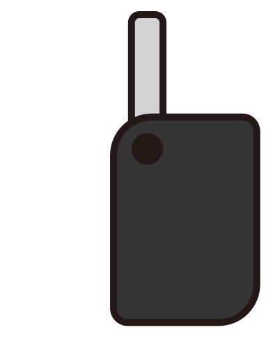

<!DOCTYPE html>
<html lang="en">
  <head>
    <meta charset="UTF-8" />
    <meta name="viewport" content="width=\, initial-scale=1.0" />
    <title>Document</title>
    <style>
      .hand {
        position: absolute;
        top: 90px;
        left: 400px;
        width: 200px;
      }
      .key {
        position: absolute;
        top: 50px;
        left: 100px;
        width: 150px;
        transition: 1s;
      }
    </style>
  </head>

  <body>
    
    <!--  -->
    <object class="key" data="images/key.svg" type="image/svg+xml"></object>
    <script>
      const hand = document.querySelector(".hand");
      const key = document.querySelector(".key");
      let isKeyInHand = false;

      hand.addEventListener("click", (e) => {
        if (isKeyInHand) {
          key.style.transform = "scale(1) translate(0, 0)";
        } else {
          // 손의 위치
          const handRect = hand.getBoundingClientRect();
          const leftPosition = handRect.left + 150;
          const topPosition = handRect.top - 60;
          // css로 이동 활용할 때는 left, top을 바로 수정하기 보다는 translate를 사용하는 게 좋음
          key.style.transform = `scale(0.5) translate(${leftPosition}px, ${topPosition}px)`;
        }
      });

      key.addEventListener("transitionend", () => {
        isKeyInHand = !isKeyInHand;
      });
    </script>
  </body>
</html>
